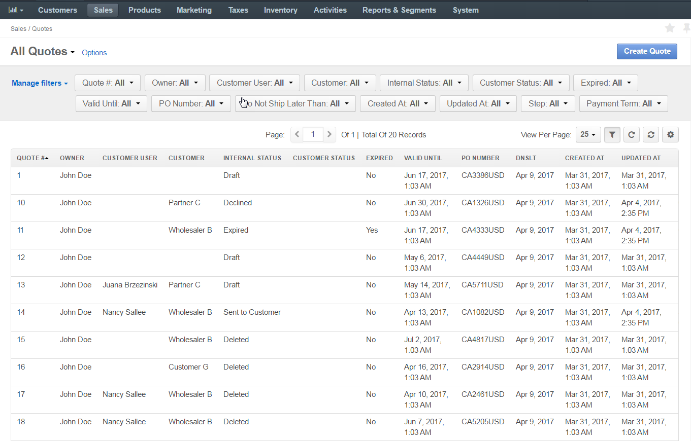
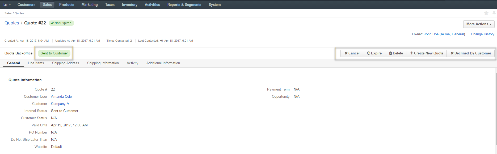
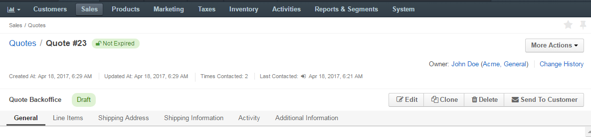

Quotes¶
This topic contains the following sections:
Overview¶
A quote in OroCommerce is used to negotiate with the customer (e.g. offer better price, more convenient quantities and additional services). A quote may be created in response to a customer request for quote, or as a result of the direct communication with the customer. Once the customer is happy with the offer in the quote and is ready to proceed with their order, they accept the quote.
Configuration¶
Quote management and their use in many ways depend on the following:
- Shipping Configuration:
- Create one or more shipping methods by configuring integrations with the shipping providers.
- Set up shipping rules that enable shipping methods for quotes/orders created with the specific destination areas and/or limit shipping availability via custom conditions.
- Other. See the Shipping Configuration guide for more detailed information.
- Payment Configuration:
- Create one or more payment methods by configuring integrations with the payment providers.
- Set up payment rules that enable payment methods for orders created with the specific destination areas and/or limit payment availability via custom conditions.
- Other. See the Payment Configuration guide for more detailed information.
- Quote Workflow - the flow of possible sequential actions that lead to quote state transitions. The workflow defines the way a sales manager can handle a quote in a particular state.
Create a Quote¶
You can create a quote based on the customer request for quote, or from scratch, based on the customer interaction outside OroCommerce.
Create a Quote From Scratch¶
To create a new quote from scratch:
Navigate to Sales > Quotes in the main menu.
Click Create Quote.

In the General section:
- Select a Customer and Customer User to create a quote for.
- Enter the quote expiration information in the Valid Until date and time boxes.
- Optionally, enter a PO Number for the customer reference.
- If necessary, set the Do Not Ship Later Than date, to limit the order validity based on the information from the customer.
- Select an order fulfilment officer in the Assigned To box.
- Select the assigned customer user that will receive the order delivery in the Assigned Customer box.
- Select a Website to make this quote visible only on the specified website.
In the Line Items section:

Add products as quote line items.
Use Select Product and Free-form entry link to switch between the following product entry modes:
Select a Product: Select the product using search (v) or from the product list (=).
Free-Form Entry: Type in the SKU and/or Product Name.
Fill in the offer:
- Provide quantity and select a product unit measurement.
- Check or more to allow the customer to increase the quantity in the order.
- Type in the unit price and select a currency.
To offer alternative quantity and prices, use + Add Offer.
Add notes to the quote line, if necessary: click Add notes in the Seller Notes section.
Note
To delete any quote line, click Delete on the right of the line item information group.
Add more products, if necessary, by clicking + Add Products below the existing product lines.
In the Shipping Address section, enter the shipping address, organization name and name of the person the future order should be shipped to.

In the Shipping Information section, configure the recommended shipping options for the customer:

- In the Shipping Methods list, select the recommended (default) shipping method that will be pre-selected when the customer gets to the shipping configuration on the checkout.
- Optionally, enter the Overridden Shipping Cost Amount, USD - a custom shipping cost that will be used instead of the one dynamically generated based on the shipping method selection.
- To enforce using only the default Shipping method selected earlier, enable the Shipping Method Locked flag. When the shippig method is locked, the buyer does not see any other payment options but the default one.
- Tick the Allow Unlisted Shipping Methods box to allow using the shipping method that is already selected as a default one, even if it is disabled by the shipping rule configuration.
Optionally, select a Payment Term as an available payment method.
- Click Save.
Edit a Quote¶
To edit the Quote:
- Navigate to Sales > Quotes in the main menu.
- Hover over the more actions menu to the right of the item and click to start editing its details.
- Update the Quote General Information, Line Items, Shipping Address, or Shipping Information. See Create a Quote section for detailed information on the available options.
- Click Save on the top right of the page.
The quote is updated.
Quote in Use¶
As an illustration, let us see the quote in action and walk through the steps buyer and sales manager may follow to communicate or negotiate for the sale:
Once a quote is created, it is automatically moved to the Draft step with the possibility to edit, clone, delete and send the quote to a customer.

The quote with an offer valid until 19 April is sent to a customer.

The quote transitions from Draft state into Sent to Customer. Now it is possible to cancel, expire, delete, create a quote, or mark it as declined by customer.
Note
If a customer generates an order based on the quote, you can leave the quote in the Sent to Customer state so that customer user could reuse it for future orders, or expire it to disable orders based on this quote.
- The customer provided no feedback on the quote before 19 April, and the quote is expired by the sales personnel, leaving it in the Closed step.

- The offer has been reconsidered and validation date was extended until 21 April. The quote is reopened. It is moved back to the draft step with the possibility to edit, clone, delete and send the quote to a customer. The quote number is changed (in our case, from 22 to 23).

See more information about the Quote Workflow for details on the steps and actions available at every step.